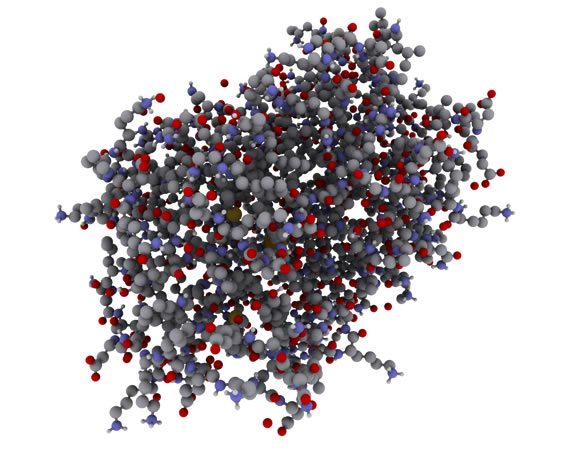

Not just trial and error

The pharmaceutical industry used to be founded on random chance and careful study of the affect of medicines. Many of these are now used for things which were certainly not their initial ideas. Listerine was originally marketed as a floor cleaner and antiseptic before it found its uses in the oral hygiene industry. Minoxidil, now finding use as a hair restoration remedy, originally started out as a blood pressure cure. These coincidental side effects take up much of researchers' time and money.
Molecules
Advances in computing mean that the shape of drugs can be closely studied before they are synthesised. The shape is important as it needs to fit certain active sites in the body and brain. Additionally, if the shapes and bonds are well know, it might lead to a simpler and cheaper way to synthesise certain medicines at large scale. This helps millions every day, and makes it easier for people in developing countries to access the treatments they need.
Honing the test process
Remote testing in labs is much faster and more precise than manually. It means that hundreds or thousands of sample chemicals can be tested in quick succession and then the best can be selected very quickly. It also means that labs can be in far away areas, as no or very few scientists need to be physically present to oversee the operation. This helps overcrowding in cities and combats pollution. Machine learning can also be used to determine the success of different compounds.